Data & BI Engineer · Soyoul Kim
Scattered information,
Scattered information,
into one screen anyone can read.
Data collectionModelingBI dashboardsOperational automation
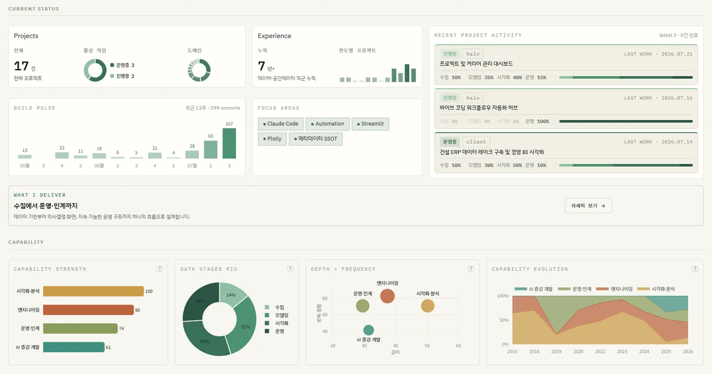
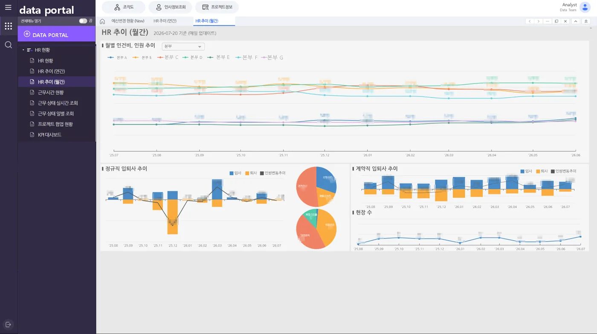
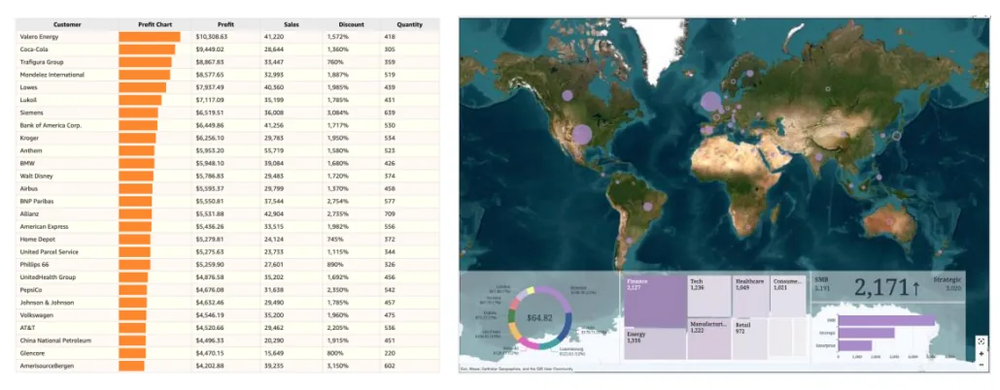
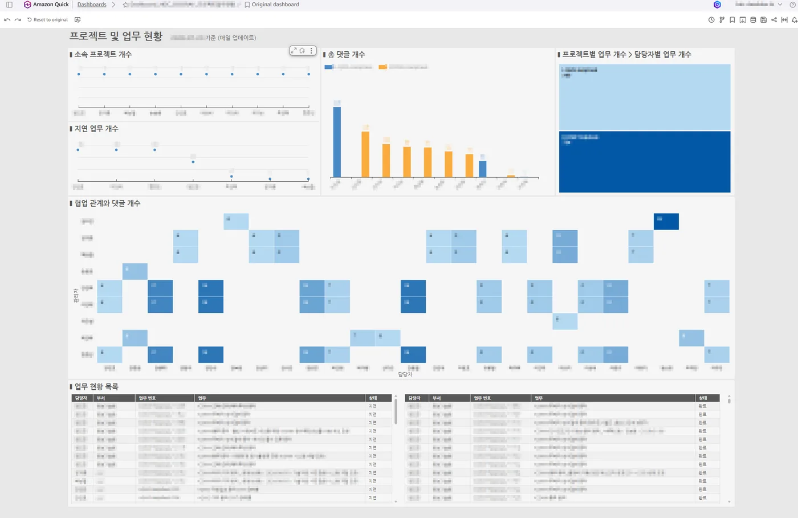
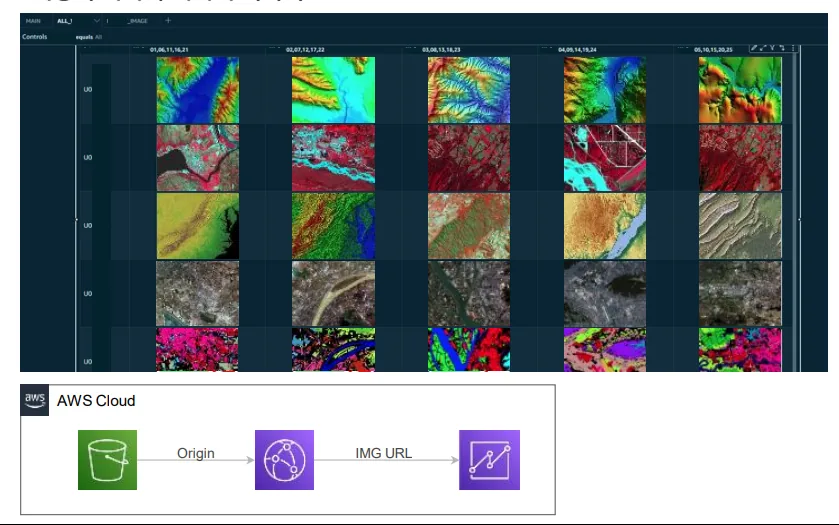
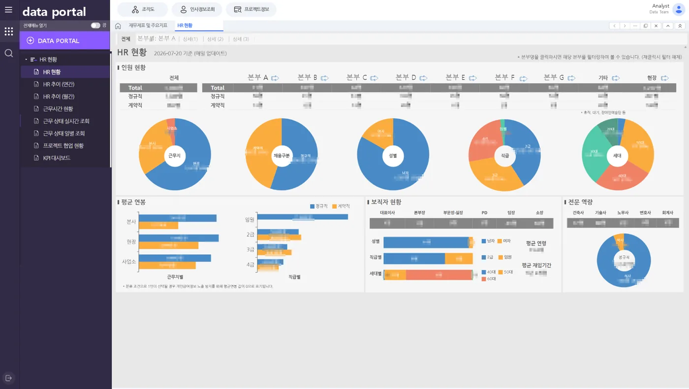
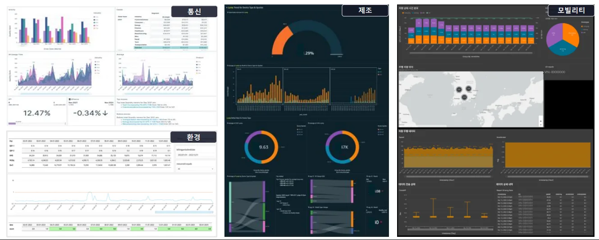
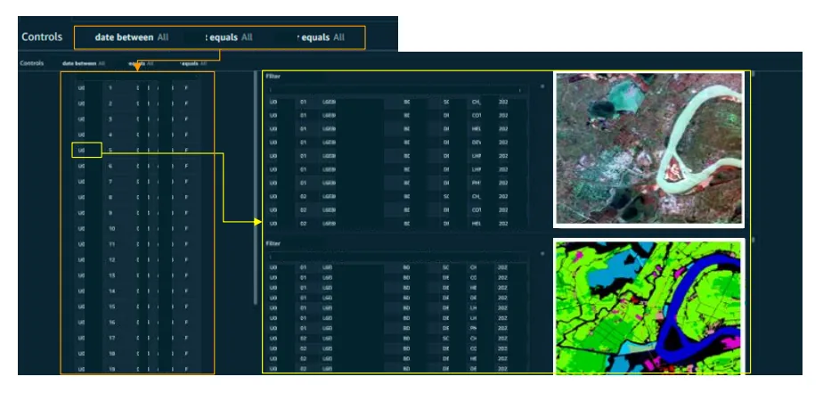
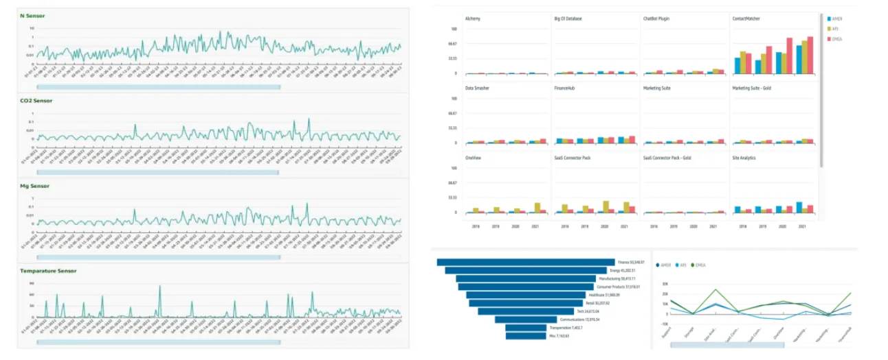
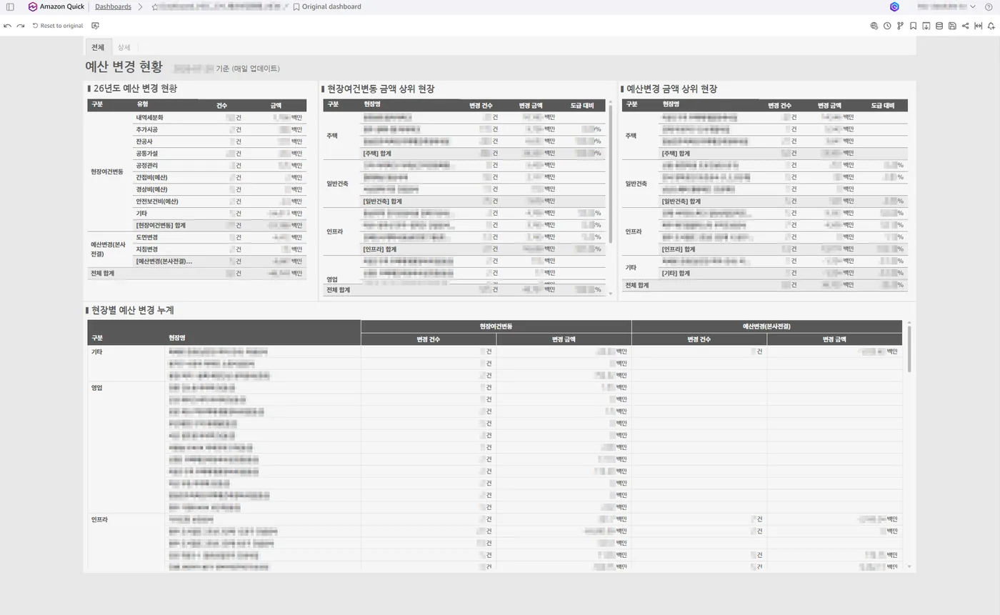
Proof, not promise
Building data systems across several companies,
I have shaped structures where information is actually used at work.
The figures below come from project records and measured results.
What changes
A well-organized data environment changes
the work itself, not just the screen.
What matters more than the dashboard is the work that follows it.
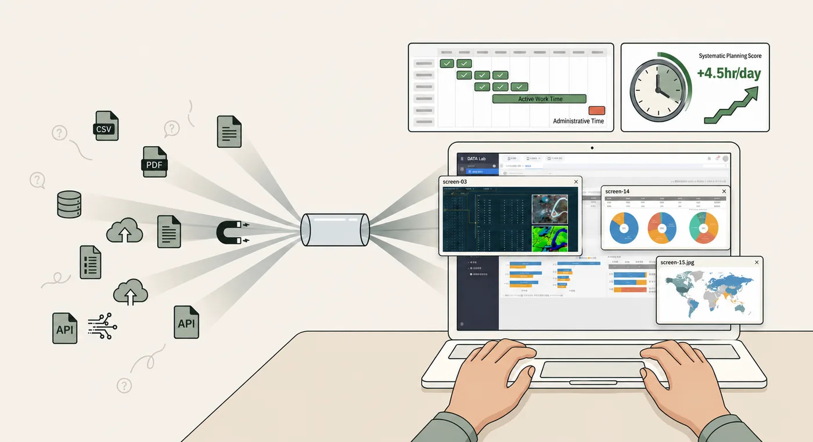
01
Less time searching, more time deciding.
Connecting scattered data and documents in one place, so the information you need is quick to confirm.
Information access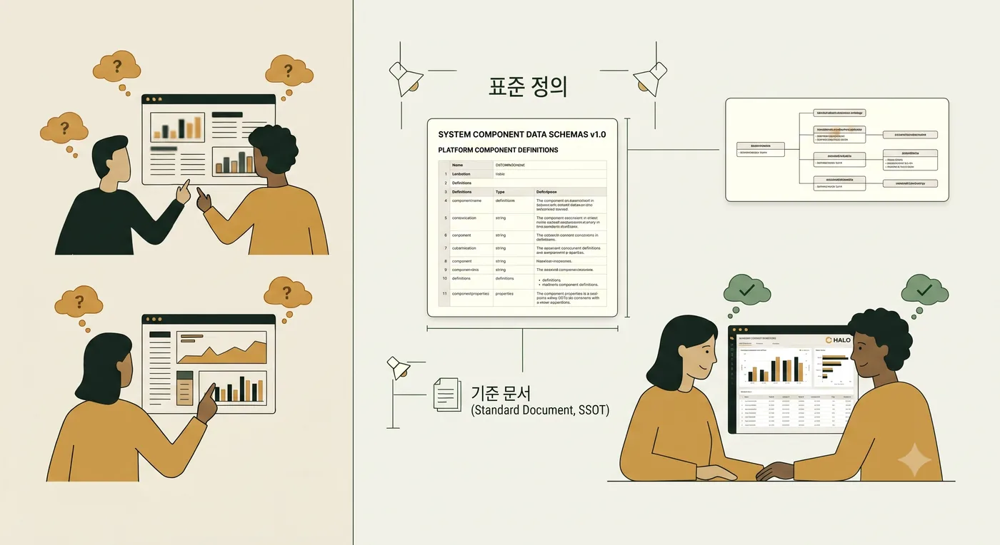
02
No more debating the same number twice.
Aligning what each metric means and how it is calculated, so anyone reading it arrives at the same answer.
Shared definitions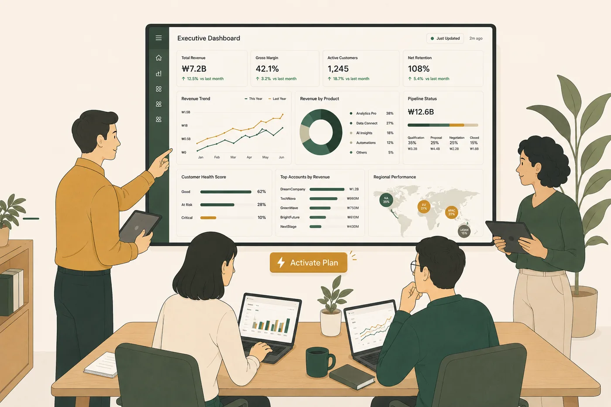
03
Reports become the start of action.
Role-fit screens and automatic refresh, so checking a number leads into the next judgment and action.
Decision makingEnd-to-end delivery
From collection through operations,
an unbroken flow.
Beyond building it, I design the structure that keeps it running with you.
Connect the data
Bringing databases, documents, and APIs into a dependable collection flow.
Align the definitions
Modeling metrics and relationships so the same question returns the same answer.
Support the work
BI screens, automatic refresh, and handover — operated around how it is actually used.
I design the flow that collects data, organizes it, and delivers it to the people who need it. The goal is a system that repeats the same way as new data arrives, that people can trust in daily use, and that analytics and AI can build on as well.
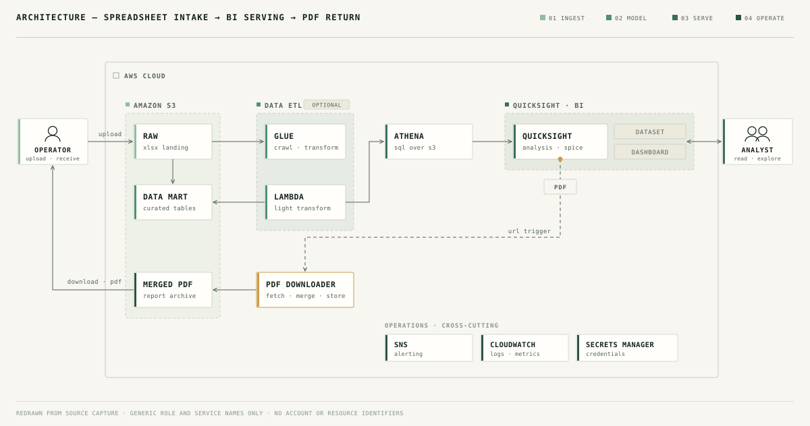
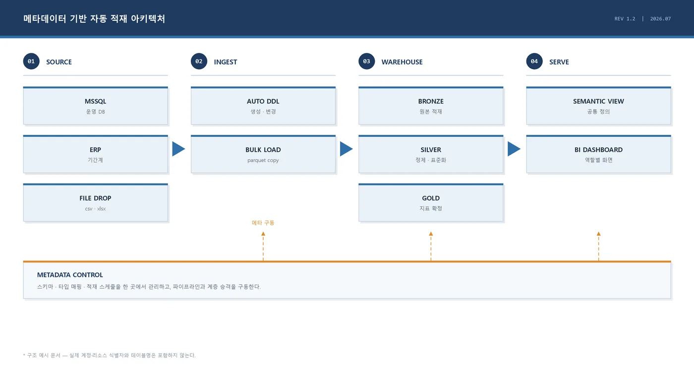
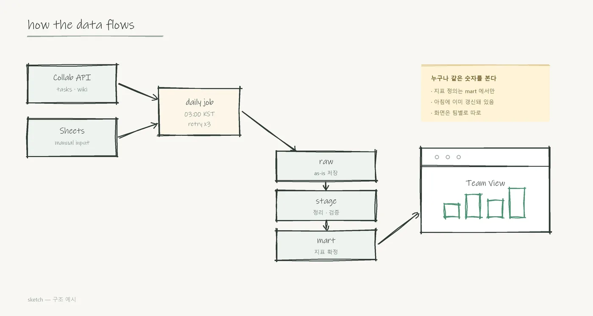
Living portfolio · proof of work
The systems I build,
I run on myself too.
Rather than leaving my projects and career as a list, I operate them through a dashboard I built. Every new record updates both the data and the screen — a living portfolio.
01What I have done, viewed as a career flow.
02What I can do, shown through real screens.
03As new projects arrive, the records and screens grow with them.
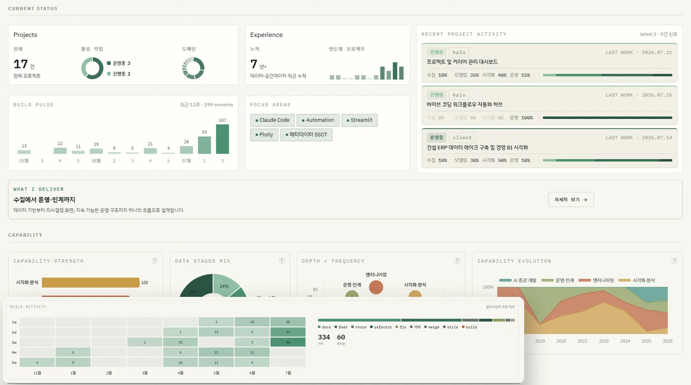
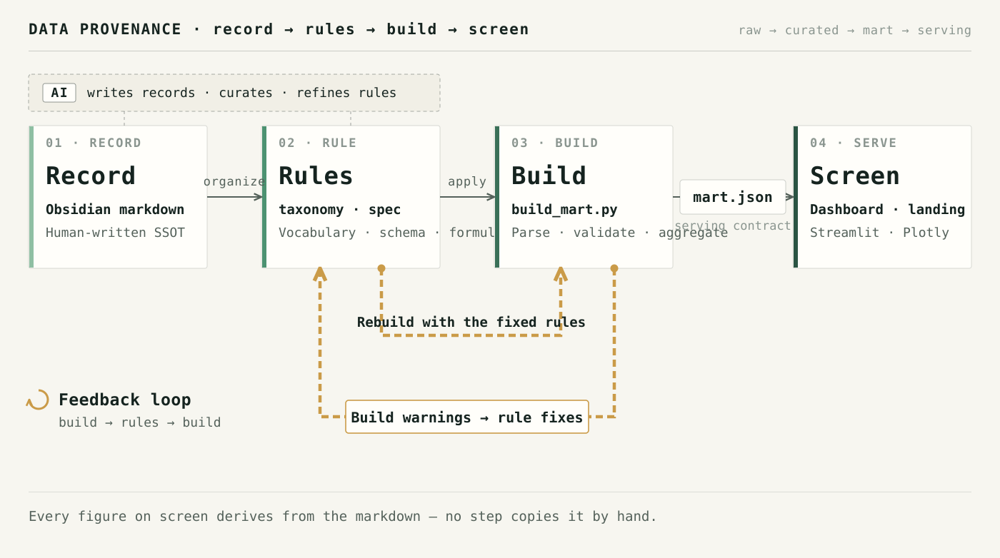